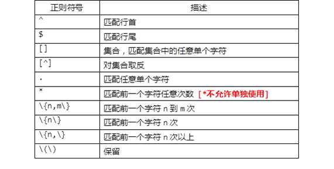
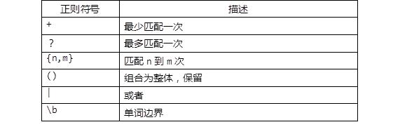

使用Shell完成各种Linux运维任务时，一旦涉及到判断、条件测试等相关操作时，往往需要对相关的命令输出进行过滤，提取出符合要求的字符串。
本案例要求熟悉字符串的常见处理操作，完成以下任务练习：
子串截取的三种用法：
子串替换的两种用法：
字符串掐头去尾：
实现此案例需要按照如下步骤进行。
步骤一：字符串的截取
1）方法一，使用 ${}表达式
格式：${变量名:起始位置:长度}
使用${}方式截取字符串时，起始位置是从0开始的。
定义一个变量phone，并确认其字符串长度：
- [root@svr5 ~]# phone="13788768897"
- [root@svr5 ~]# echo ${#phone}
- 11 //包括11个字符
使用${}截取时，起始位置可以省略，省略时从第一个字符开始截。比如，以下操作都可以从左侧开始截取前6个字符：
- [root@svr5 ~]# echo ${phone:0:6}
- 137887
或者
- [root@svr5 ~]# echo ${phone::6}
- 137887
因此，如果从起始位置1开始截取6个字符，那就变成这个样子了：
- [root@svr5 ~]# echo ${phone:1:6}
- 378876
2）方法二，使用 expr substr
格式：expr substr "$变量名" 起始位置 长度
还以前面的phone变量为例，确认原始值：
- [root@svr5 ~]# echo $phone
- 13788768897
使用expr substr截取字符串时，起始编号从1开始，这个要注意与${}相区分。
从左侧截取phone变量的前6个字符：
- [root@svr5 ~]# expr substr "$phone" 1 6
- 137887
从左侧截取phone变量，从第9个字符开始，截取3个字符：
- [root@svr5 ~]# expr substr "$phone" 9 3
- 897
3）方式三，使用cut分割工具
格式：echo $变量名 | cut -b 起始位置-结束位置
选项 -b 表示按字节截取字符，其中起始位置、结束位置都可以省略。当省略起始位置时，视为从第1个字符开始（编号也是从1开始，与expr类似），当省略结束位置时，视为截取到最后。
还以前面的Phone变量为例，确认原始值：
- [root@svr5 ~]# echo $phone
- 13788768897
从左侧截取前6个字符，可执行以下操作：
- [root@svr5 ~]# echo $phone | cut -b 1-6
- 137887
从第8个字符截取到末尾：
- [root@svr5 ~]# echo $phone | cut -b 8-
- 8897
只截取单个字符，比如第9个字符：
- [root@svr5 ~]# echo $phone | cut -b 9
- 8
截取不连续的字符，比如第3、5、8个字符：
- [root@svr5 ~]# echo $phone | cut -b 3,5,8
- 788
4）一个随机密码的案例
版本1：
- [root@svr5 ~]# vim rand.sh
- #!/bin/bash
- x=abcdefghijklmnopqrstuvwxyzABCDEFGHIJKLMNOPQRSTUVWXYZ0123456789
- //所有密码的可能性是26+26+10=62（0-61是62个数字）
- num=$[RANDOM%62]
- pass=${x:num:1}
版本2：
- [root@svr5 ~]# vim rand.sh
- #!/bin/bash
- x=abcdefghijklmnopqrstuvwxyzABCDEFGHIJKLMNOPQRSTUVWXYZ0123456789
- //所有密码的可能性是26+26+10=62（0-61是62个数字）
- pass=''
- for i in {1..8}
- do
- num=$[RANDOM%62]
- tmp=${x:num:1}
- pass=${pass}$tmp
- done
- echo $pass
步骤二：字符串的替换
1）只替换第1个子串
格式：${变量名/old/new}
还以前面的phone变量为例，确认原始值：
- [root@svr5 ~]# echo $phone
- 13788768897
将字符串中的第1个8替换为X:
- [root@svr5 ~]# echo ${phone/8/X}
- 137X8768897
2）替换全部子串
格式：${变量名//old/new}
将phone字符串中的所有8都替换为X:
- [root@svr5 ~]# echo ${phone//8/X}
- 137XX76XX97
步骤三：字符串的匹配删除
以处理系统默认的账户信息为例，定义变量A：
- [root@svr5 ~]# A=`head -1 /etc/passwd`
- [root@svr5 ~]# echo $A
- root:x:0:0:root:/root:/bin/bash
1）从左向右，最短匹配删除
格式：${变量名#*关键词}
删除从左侧第1个字符到最近的关键词“：”的部分，* 作通配符理解：
- [root@svr5 ~]# echo ${A#*:}
- x:0:0:root:/root:/bin/bash
2）从左向右，最长匹配删除
格式：${变量名##*关键词}
删除从左侧第1个字符到最远的关键词“:”的部分：
- [root@svr5 ~]# echo $A //确认变量A的值
- root:x:0:0:root:/root:/bin/bash
- [root@svr5 ~]# echo ${A##*:}
- /bin/bash
3）从右向左，最短匹配删除
格式：${变量名%关键词*}
删除从右侧最后1个字符到往左最近的关键词“:”的部分，* 做通配符理解：
- [root@svr5 ~]# echo ${A%:*}
- root:x:0:0:root:/root
4）从右向左，最长匹配删除
格式：${变量名%%关键词*}
删除从右侧最后1个字符到往左最远的关键词“:”的部分：
- [root@svr5 ~]# echo ${A%%:*}
- root
步骤四：编写renfilex.sh脚本
创建一个测试用的测试文件
- [root@svr5 ~]# mkdir rendir
- [root@svr5 ~]# cd rendir
- [root@svr5 rendir]# touch {a,b,c,d,e,f,g,h,i}.doc
- [root@svr5 rendir]# ls
- a.doc b.doc c.doc d.doc e.doc f.doc g.doc h.doc i.doc
1）批量修改文件扩展名的脚本
脚本用途为：批量修改当前目录下的文件扩展名，将.doc改为.txt。
脚本内容参考如下：
- [root@svr5 rendir]# vim renfile.sh
- #!/bin/bash
- for i in `ls *.doc` #注意这里有反引号
- do
- mv $i ${i%.*}.txt
- done
- [root@svr5 ~]# chmod +x renfile.sh
测试脚本：
- [root@svr5 rendir]# ./renfile.sh
- [root@svr5 rendir]# ls
- a.txt b.txt c.txt d.txt e.txt f.txt g.txt h.txt i.txt
2）改进版脚本(批量修改扩展名)
通过位置变量 $1、$2提供更灵活的脚本，改进的脚本编写参考如下：
- [root@svr5 rendir]# vim ./renfile.sh
- #!/bin/bash
- #version:2
- for i in `ls *.$1`
- do
- mv $i ${i%.*}.$2
- done
3）验证、测试改进后的脚本
将 *.doc文件的扩展名改为.txt：
- [root@svr5 rendir]# ./renfile.sh txt doc
将 *.doc文件的扩展名改为.mp4：
- [root@svr5 rendir]# ./renfile.sh doc mp4
本案例要求编写一个脚本sumx.sh，求从1-x的和，相关要求如下：
通过${var:-word}判断变量是否存在，决定变量的初始值。
实现此案例需要按照如下步骤进行。
步骤一：认识字符串初值的最常见处理方法
1）只取值，${var:-word}
若变量var已存在且非Null，则返回 $var 的值；否则返回字串“word”，原变量var的值不受影响。
变量值已存在的情况：
- [root@svr5 ~]# XX=11
- [root@svr5 ~]# echo $XX //查看原变量值
- 11
- [root@svr5 ~]# echo ${XX:-123} //因XX已存在，输出变量XX的值
- 11
变量值不存在的情况：
- [root@svr5 ~]# echo ${YY:-123} //因YY不存在，输出“123”
- 123
编写一个验证知识点的参考示例脚本如下：
- [root@svr5 ~]# cat /root/test.sh
- #!/bin/bash
- read -p "请输入用户名:" user
- [ -z $user ] && exit //如果无用户名，则脚本退出
- read -p "请输入密码:" pass
- pass=${pass:-123456} //如果用户没有输入密码，则默认密码为123456
- useradd $user
- echo "$pass" | passwd --stdin $user
步骤二：编写sumx.sh脚本，处理read输入的初值
用来从键盘读入一个正整数x，求从1到x的和；当用户未输入值（直接回车）时，为了避免执行出错，应为x赋初值1 。
1）脚本编写参考如下
- [root@svr5 ~]# vim sumx.sh
- #!/bin/bash
- read -p "请输入一个正整数：" x
- x=${x:-1}
- i=1; SUM=0
- while [ $i -le $x ]
- do
- let SUM+=i
- let i++
- done
- echo "从1到$x的总和是：$SUM"
- [root@svr5 ~]# chmod +x sumx.sh
2）验证、测试脚本执行效果：
- [root@svr5 ~]# ./sumx.sh
- 请输入一个正整数：25 //输入25，正常读入并计算、输出结果
- 从1到25的总和是：325
- [root@svr5 ~]# ./sumx.sh
- 请输入一个正整数：70 //输入70，正常读入并计算、输出结果
- 从1到70的总和是：2485
- [root@svr5 ~]# ./sumx.sh
- 请输入一个正整数： //直接回车，设x=1后计算、输出结果
- 从1到1的总和是：1
本案例要求编写一个expect脚本，实现SSH登录的自动交互：
expect可以为交互式过程（比如FTP、SSH等登录过程）自动输送预先准备的文本或指令，而无需人工干预。触发的依据是预期会出现的特征提示文本。
储备知识（发送邮件的几种方式）：
- [root@svr5 ~]# echo "test mail" | mail -s test root
- [root@svr5 ~]# mail -s test root < /etc/passwd
- [root@svr5 ~]# mail -s test root << EOF
- test mail
- hell world
- EOF
实现此案例需要按照如下步骤进行。
步骤一：准备expect及SSH测试环境
1）安装expect工具
- [root@svr5 ~]# yum -y install expect //安装expect
- .. ..
- Installed:
- expect.x86_64 0:5.44.1.15-5.el6_4
- Dependency Installed:
- tcl.x86_64 1:8.5.7-6.el6
- [root@svr5 ~]# which expect //确认expect路径
- /usr/bin/expect
步骤二：编写脚本，实现免交互登录
1）任务需求及思路分析
在SSH登录过程中，如果是第一次连接到该目标主机，则首先会被要求接受密钥，然后才提示输入密码：
注意：不要照抄这里的IP地址，需要根据自己的实际IP填写！！！
- [root@svr5 ~]# ssh root@192.168.4.5 //连接目标主机
- The authenticity of host '192.168.4.5 (192.168.4.5)' can't be established.
- RSA key fingerprint is 58:a0:d6:00:c7:f1:34:5d:6c:6d:70:ce:e0:20:f8:f3.
- Are you sure you want to continue connecting (yes/no)? yes //接受密钥
- Warning: Permanently added '192.168.4.5' (RSA) to the list of known hosts.
- root@192.168.4.5's password: //验证密码
- Last login: Thu May 7 22:05:44 2015 from 192.168.4.5
- [root@svr5 ~]$ exit //返回客户端
- logout
- Connection to 192.168.4.5 closed.
当然，如果SSH登录并不是第一次，则接受密钥的环节就没有了，而是直接进入验证密码的过程：
注意：不要照抄这里的IP地址，需要根据自己的实际IP填写！！！
- [root@svr5 ~]# ssh root@192.168.4.5 //连接目标主机
- root@192.168.4.5's password: //验证密码
- Last login: Mon May 11 12:02:39 2015 from 192.168.4.5
- [root@svr5 ~]$ exit //返回客户端
- logout
- Connection to 192.168.4.5 closed.
2）根据实现思路编写脚本文件
脚本内容参考如下版本1：
注意：不要照抄脚本里的IP地址与密码，需要根据自己的实际情况填写！！！
- [root@svr5 ~]# vim expect_ssh.sh
- #!/bin/bash
- expect << EOF
- spawn ssh 192.168.4.5 #//创建交互式进程
- expect "password:" { send "123456\r" } #//自动发送密码
- expect "#" { send "touch /tmp.txt\r" } #//发送命令
- expect "#" { send "exit\r" }
- EOF
- [root@svr5 ~]# chmod +x expect_ssh.sh
通过循环批量操作，版本2：
注意：不要照抄脚本里的IP地址与密码，需要根据自己的实际情况填写！！！
- [root@svr5 ~]# vim expect_ssh.sh
- #!/bin/bash
- for i in 10 11 #注意IP根据实际情况填写
- do
- expect << EOF
- spawn ssh 192.168.4.$i #//创建交互式进程
- expect "password:" { send "123456\r" } #//自动发送密码
- expect "#" { send "touch /tmp.txt\r" } #//发送命令
- expect "#" { send "exit\r" }
- EOF
- done
- [root@svr5 ~]# chmod +x expect_ssh.sh
注意事项：
expect脚本的最后一行默认不执行
如果不希望ssh时出现yes/no的提示，远程时使用如下选项:
# ssh -o StrictHostKeyChecking=no server0
本案例要求熟悉正则表达式的编写，完成以下任务：
表－1 基本正则列表
表－1 扩展正则列表
实现此案例需要按照如下步骤进行。
步骤一：正则表达式匹配练习
1）典型的应用场合：grep、egrep检索文本行
grep命令不带-E选项时，支持基本正则匹配模式。比如“word”关键词检索、“^word”匹配以word开头的行、“word$”匹配以word结尾的行……等等。
输出以“r”开头的用户记录：
- [root@svr5 ~]# grep '^r' /etc/passwd
- root:x:0:0:root:/root:/bin/bash
- rpc:x:32:32:Portmapper RPC user:/:/sbin/nologin
- rpcuser:x:29:29:RPC Service User:/var/lib/nfs:/sbin/nologin
输出以“localhost”结尾的行：
- [root@svr5 ~]# grep 'localhost$' /etc/hosts
- 127.0.0.1 localhost.localdomain localhost
若希望在grep检索式同时组合多个条件，比如输出以“root”或者以“daemon”开头的行：
- [root@svr5 ~]# grep '^root|^daemon' /etc/passwd //搜索无结果
- [root@svr5 ~]#
而若若使用grep -E或egrep命令，可支持扩展正则匹配模式，能够自动识别 |、{} 等扩展正则表达式中的特殊字符，用起来更加方便，比如：
- [root@svr5 ~]# grep -E '^(root|daemon)' /etc/passwd
- root:x:0:0:root:/root:/bin/bash
- daemon:x:2:2:daemon:/sbin:/sbin/nologin
或者
- [root@svr5 ~]# egrep '^(root|daemon)' /etc/passwd
- root:x:0:0:root:/root:/bin/bash
- daemon:x:2:2:daemon:/sbin:/sbin/nologin
使用grep -E 与 使用egrep命令完全等效，推荐使用后者，特别是涉及到复杂的正则表达式的时候。
2）grep、egrep命令的-q选项
选项 -q 表示 quiet（静默）的意思，结合此选项可以只做检索而并不输出，通常在脚本内用来识别查找的目标是否存在，通过返回状态 $? 来判断，这样可以忽略无关的文本信息，简化脚本输出。
比如，检查/etc/hosts文件内是否存在192.168.4.4的映射记录，如果存在则显示“YES”，否则输出“NO”，一般会执行：
- [root@svr5 ~]# grep '^192.168.4.4' /etc/hosts && echo "YES" || echo "NO"
- 192.168.4.4 svr5.tarena.com svr5
- YES
这样grep的输出信息和脚本判断后的提示混杂在一起，用户不易辨别，所以可以改成以下操作：
- [root@svr5 ~]# grep -q '^192.168.4.4' /etc/hosts && echo "YES" || echo "NO"
- YES
是不是清爽多了，从上述结果也可以看到，使用 -q 选项的效果与使用 &> /dev/null的效果类似。
3）基本元字符 ^、$ —— 匹配行首、行尾
输出注释的配置行（以#开头的行）：
- [root@svr5 ~]# egrep '^#' /etc/inittab
统计本地用户中登录Shell为“/sbin/nologin”的用户个数：
提示：-m10仅在文件的前10行中过滤，后面的行不再过滤。
- [root@svr5 ~]# egrep -m10 '/sbin/nologin$' /etc/passwd //先确认匹配正确
- bin:x:1:1:bin:/bin:/sbin/nologin
- daemon:x:2:2:daemon:/sbin:/sbin/nologin
- adm:x:3:4:adm:/var/adm:/sbin/nologin
- lp:x:4:7:lp:/var/spool/lpd:/sbin/nologin
- mail:x:8:12:mail:/var/spool/mail:/sbin/nologin
- uucp:x:10:14:uucp:/var/spool/uucp:/sbin/nologin
- operator:x:11:0:operator:/root:/sbin/nologin
- games:x:12:100:games:/usr/games:/sbin/nologin
- gopher:x:13:30:gopher:/var/gopher:/sbin/nologin
- ftp:x:14:50:FTP User:/var/ftp:/sbin/nologin
- [root@svr5 ~]# egrep -c '/sbin/nologin$' /etc/passwd
- 32 //结合 -c 选项输出匹配的行数
使用 -c 选项可输出匹配行数，这与通过管道再 wc -l的效果是相同的，但是写法更简便。比如，统计使用“/bin/bash”作为登录Shell的正常用户个数，可执行：
- [root@svr5 ~]# egrep -c '/bin/bash$' /etc/passwd
- 26
或者
- [root@svr5 ~]# egrep '/bin/bash$' /etc/passwd | wc -l
- 26
4）基本元字符 . —— 匹配任意单个字符
以/etc/rc.local文件为例，确认文本内容：
- [root@svr5 ~]# cat /etc/rc.local
- #!/bin/sh
- #
- # This script will be executed *after* all the other init scripts.
- # You can put your own initialization stuff in here if you don't
- # want to do the full Sys V style init stuff.
- touch /var/lock/subsys/local
输出/etc/rc.local文件内至少包括一个字符（\n换行符除外）的行，即非空行：
- [root@svr5 ~]# egrep '.' /etc/rc.local
- #!/bin/sh
- #
- # This script will be executed *after* all the other init scripts.
- # You can put your own initialization stuff in here if you don't
- # want to do the full Sys V style init stuff.
- touch /var/lock/subsys/local
输出/etc/rc.local文件内的空行（用 –v 选项将条件取反）：
- [root@svr5 ~]# egrep -v '.' /etc/rc.local
- [root@svr5 ~]#
上述取空行的操作与下列操作效果相同：
- [root@svr5 ~]# egrep '^$' /etc/rc.local
- [root@svr5 ~]#
5）基本元字符 +、?、* —— 目标出现的次数
还以/etc/rc.local文件为例：
- [root@svr5 ~]# cat /etc/rc.local
- #!/bin/sh
- #
- # This script will be executed *after* all the other init scripts.
- # You can put your own initialization stuff in here if you don't
- # want to do the full Sys V style init stuff.
- touch /var/lock/subsys/local
输出包括 f、ff、ff、……的行，即“f”至少出现一次：
- [root@svr5 ~]# egrep 'f+' /etc/rc.local
- # This script will be executed *after* all the other init scripts.
- # You can put your own initialization stuff in here if you don't
- # want to do the full Sys V style init stuff.
输出包括init、initial的行，即末尾的“ial”最多出现一次（可能没有）：
- [root@svr5 ~]# egrep 'init(ial)?' /etc/rc.local
- # This script will be executed *after* all the other init scripts.
- # You can put your own initialization stuff in here if you don't
- # want to do the full Sys V style init stuff.
输出包括stu、stuf、stuff、stufff、……的行，即末尾的“f”可出现任意多次，也可以没有。重复目标只有一个字符时，可以不使用括号：
- [root@svr5 ~]# egrep 'stuf*' /etc/rc.local
- # You can put your own initialization stuff in here if you don't
- # want to do the full Sys V style init stuff.
输出所有行，单独的“.*”可匹配任意行（包括空行）：
- [root@svr5 ~]# egrep '.*' /etc/rc.local
- #!/bin/sh
- #
- # This script will be executed *after* all the other init scripts.
- # You can put your own initialization stuff in here if you don't
- # want to do the full Sys V style init stuff.
- touch /var/lock/subsys/local
输出/etc/passwd文件内“r”开头且以“nologin”结尾的用户记录，即中间可以是任意字符：
- [root@svr5 ~]# egrep '^r.*nologin$' /etc/passwd
- rpc:x:32:32:Portmapper RPC user:/:/sbin/nologin
- rpcuser:x:29:29:RPC Service User:/var/lib/nfs:/sbin/nologin
6）元字符 {} —— 限定出现的次数范围
创建一个练习用的测试文件：
- [root@svr5 ~]# vim brace.txt
- ab def ghi abdr
- dedef abab ghighi
- abcab CD-ROM
- TARENA IT GROUP
- cdcd ababab
- Hello abababab World
输出包括ababab的行，即“ab”连续出现3次：
- [root@svr5 ~]# egrep '(ab){3}' brace.txt
- cdcd ababab
- Hello abababab World
输出包括abab、ababab、abababab的行，即“ab”连续出现2~4次：
- [root@svr5 ~]# egrep '(ab){2,4}' brace.txt
- dedef abab ghighi
- cdcd ababab
- Hello abababab World
输出包括ababab、abababab、……的行，即“ab”最少连续出现3次：
- [root@svr5 ~]# egrep '(ab){3,}' brace.txt
- cdcd ababab
- Hello abababab World
7）元字符 [] —— 匹配范围内的单个字符
还以前面的测试文件bracet.txt为例：
- [root@svr5 ~]# cat brace.txt
- ab def ghi abdr
- dedef abab ghighi
- abcab CD-ROM
- TARENA IT GROUP
- cdcd ababab
- Hello abababab World
输出包括abc、abd的行，即前两个字符为“ab”，第三个字符只要是c、d中的一个就符合条件：
- [root@svr5 ~]# egrep 'ab[cd]' brace.txt
- ab def ghi abdr
- abcab CD-ROM
输出包括大写字母的行，使用[A-Z]匹配连续范围：
- [root@svr5 ~]# egrep '[A-Z]' brace.txt
- abcab CD-ROM
- TARENA IT GROUP
- Hello abababab World
过滤“非小写字母”的其他字符：
- [root@svr5 ~]# egrep '[^a-z]' brace.txt
8）单词边界匹配
以文件/etc/rc.local为例：
- [root@svr5 ~]# cat /etc/rc.local
- #!/bin/sh
- #
- # This script will be executed *after* all the other init scripts.
- # You can put your own initialization stuff in here if you don't
- # want to do the full Sys V style init stuff.
- touch /var/lock/subsys/local
输出包括单词“init”的行，文件中“initialization”不合要求：
- [root@svr5 ~]# egrep '\binit\b' /etc/rc.local
- # This script will be executed *after* all the other init scripts.
- # want to do the full Sys V style init stuff.
或者：
- [root@svr5 ~]# egrep '\<init\>' /etc/rc.local
- # This script will be executed *after* all the other init scripts.
- # want to do the full Sys V style init stuff.
输出包括以“ll”结尾的单词的行，使用 \> 匹配单词右边界：
- [root@svr5 ~]# egrep 'll\>' /etc/rc.local
- # This script will be executed *after* all the other init scripts.
- # want to do the full Sys V style init stuff.
或者：
- [root@svr5 ~]# egrep 'll\b' /etc/rc.local
- # This script will be executed *after* all the other init scripts.
- # want to do the full Sys V style init stuff.
9）多个条件的组合
通过dmesg启动日志查看蓝牙设备、网卡设备相关的信息：
- [root@svr5 ~]# egrep -i 'eth|network|bluetooth' /var/log/dmesg
- Initalizing network drop monitor service
- Bluetooth: Core ver 2.10
- Bluetooth: HCI device and connection manager initialized
- Bluetooth: HCI socket layer initialized
- Bluetooth: HCI USB driver ver 2.9
- Intel(R) PRO/1000 Network Driver - version 7.3.21-k4-3-NAPI
- e1000: eth0: e1000_probe: Intel(R) PRO/1000 Network Connection